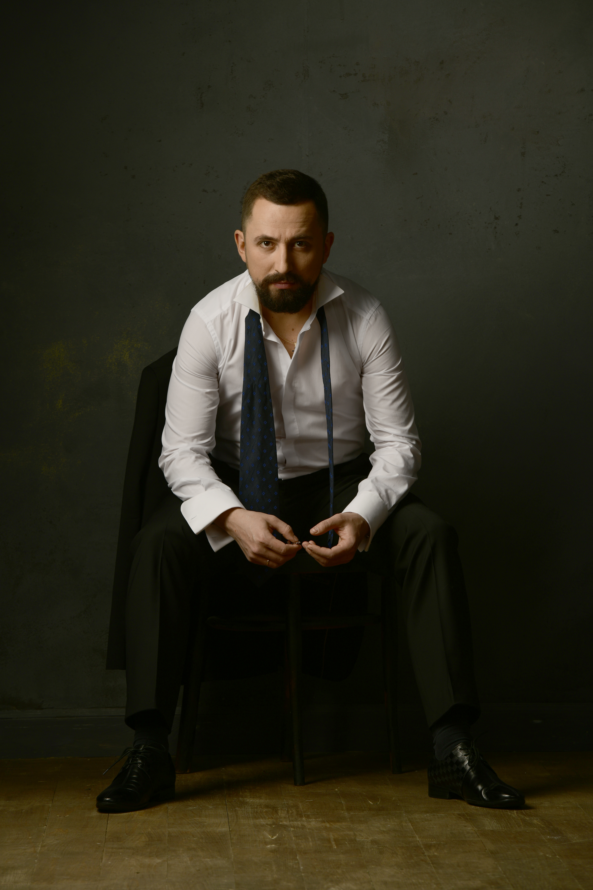
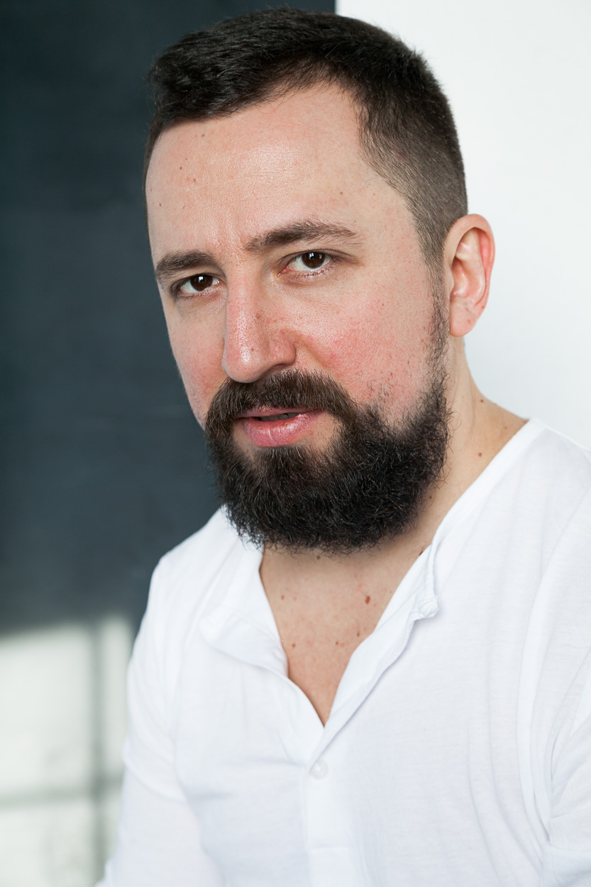
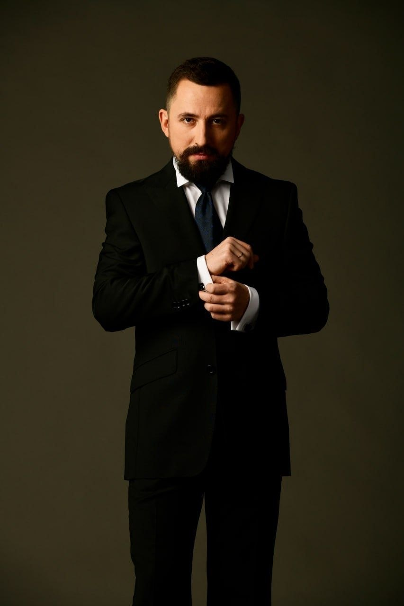
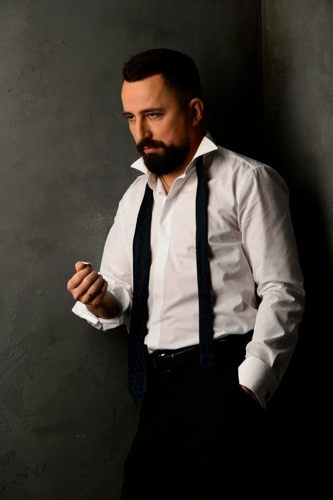
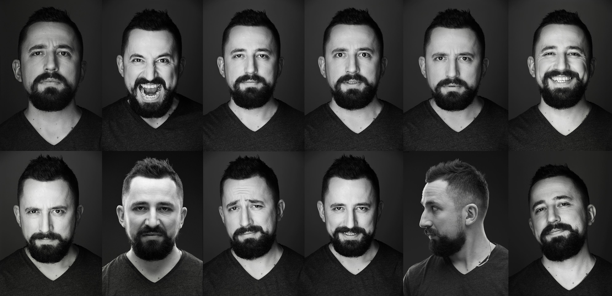
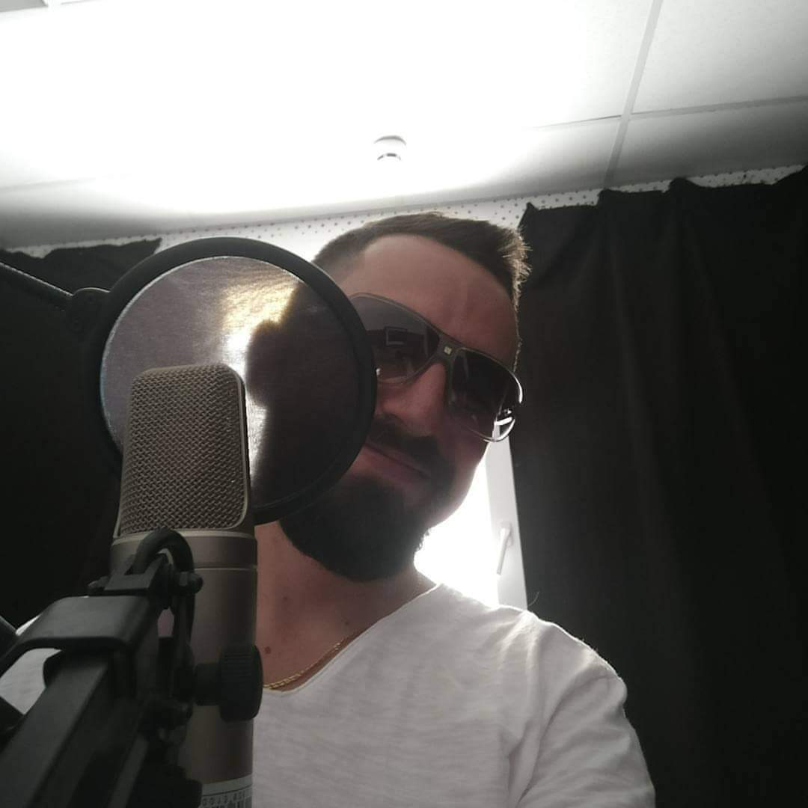
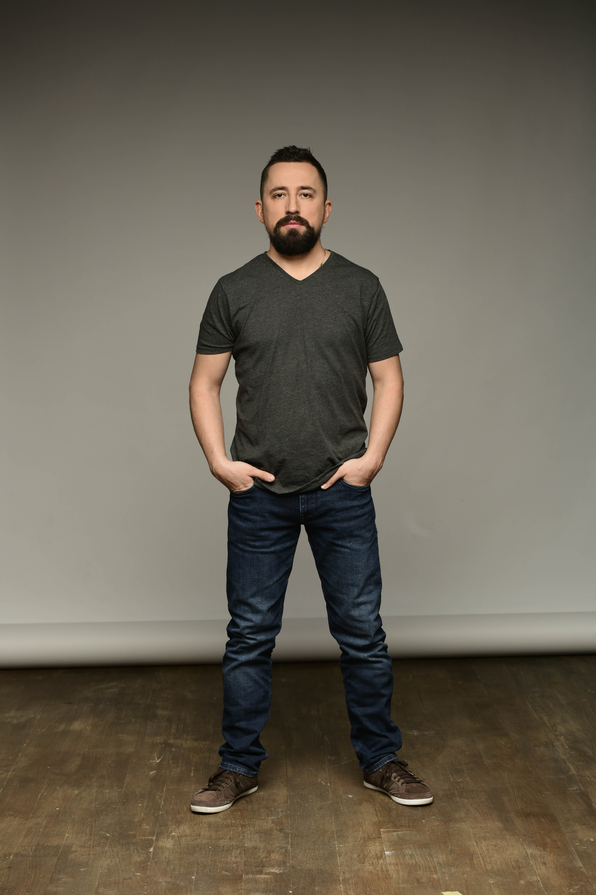

Професійний актор кіно та театру, артист озвучування й дубляжу. З 2002 року і дотепер — ексклюзивний брендовий голос телеканалу СТБ та головних флагманських шоу країни ("Х-Фактор", "Україна має талант", "Танцюють всі!", "Зважені та щасливі"...).

Місце для основного портрету
Покладіть ваше фото поруч із файлом сайту та назвіть його photo.jpg
Актуальні дані для кастинг-директорів та продакшнів
Натисніть на кнопку вище, щоб відкрити повну галерею світлин на сайті, або оберіть фото нижче

Великий план (нейтральний)
gallery-1.jpg

Діловий / статусний образ
gallery-2.jpg

Характерний / драматичний образ
gallery-3.jpg

Кадр зі зйомок у кіно
gallery-4.jpg

Озвучування та дубляж
gallery-5.jpg

Повний зріст / Smart Casual
gallery-6.jpg
Озвучування роликів для підрозділів Збройних Сил України, благодійних фондів та волонтерських зборів виконую абсолютно безкоштовно (Pro Bono). Якщо ви готуєте відео для підтримки війська — сміливо звертайтеся по допомогу.
Фірмові анонси та проморолики головних національних телепроєктів («Україна має талант», «Зважені та щасливі», «Х-фактор», «МастерШеф» та ін.).
Іміджеві та продуктові відеоролики для телебачення і діджитал-платформ.
Державні інформаційні кампанії, гуманітарні ініціативи, культурні та соціально важливі відеопроєкти.
Закадровий голос культових реаліті-шоу, документальних циклів та розважальних програм: "МастерШеф", "Танці з зірками (СТБ)", "Битва екстрасенсів", "Слідство ведуть екстрасенси", "Неймовірна правда про зірок (Перші сезони)", "У пошуках істини", "Документальний детектив", "Документальний блокбастер", "Звана вечеря", "Фермер шукає дружину", "Кулінарна династія", "Кохана, ми вбиваємо дітей", "Вагітна в 16", "Лід та полум'я", "Моя правда (Перші сезони)", "Правила життя", "Живе кіно" — у плейлисті на YouTube.
Активна робота у повнометражному кіно, телевізійних серіалах та національних рекламних кампаніях.
Інтенсив за технікою провідного голлівудського коуча («The Power of the Actor: The Chubbuck Technique»).
Ексклюзивний брендовий голос каналу, диктор промо та флагманських телевізійних шоу («Україна має талант», «Зважені та щасливі» та ін.).
Актор театру.
Факультет театрального мистецтва, спеціальність: актор драми та кіно (диплом з відзнакою).